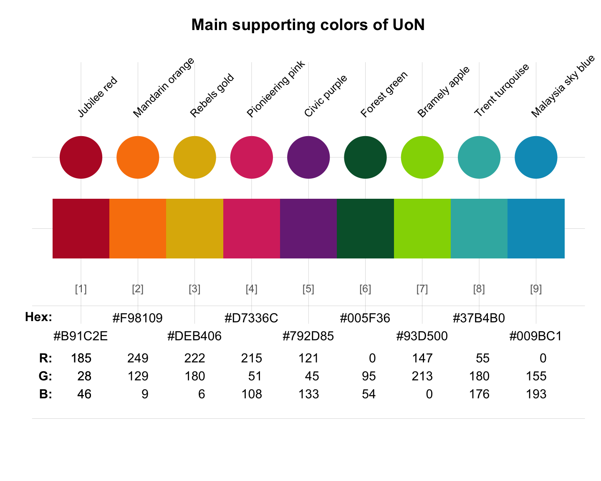

Supporting colours of the University of Nottingham, England/UK
Source:R/Nottingham.R
nottingham_2.Rdnottingham_2 provides the nine supporting colours and five corresponding tints
(per colour) of the University of Nottingham, England/UK.
Source
Colour definitions are based on the UoN's Colour guidelines.
Details
The supporting colours are accents. They add warmth and vibrancy and can elevate designs.
Inspired by the University of Nottingham campus,
key brand messages and the city of Nottingham, nine colours build up
the palette to complement the primary Nottingham blue (see nottingham_1).
The supporting palette should be used sparingly, with a maximum of two supporting colours in any one asset.
Where colour is used within an asset, Nottingham blue needs to be visually dominant and
the supporting palette should be less than half of the make-up of colour within the asset.
Supporting colours can and should be used for campaigns and initiatives, to help audience recognition and aid navigation.
Users must choose the correct colour output for the asset and its usage (RGB for digital and CMYK for print), as values have been created to keep the most vibrancy in print and the best colour representation across digital channels.
Each colour has five tints that can also be used for variety and to assist legibility. HEX codes have been provided for each tint, and these should be used when creating digital artwork, rather than using opacity.
nottingham_2 uses the HEX color definitions.
See also
nottingham_1 for primary colours of the University of Nottingham;
nottingham_3 for neutral colours of the University of Nottingham;
seecol for viewing and comparing colour palettes;
usecol for using colour palettes;
simcol for finding similar colours;
newpal for defining new colour palettes;
grepal for finding named colours.
Other UK university color palettes:
nottingham_1,
nottingham_3
Examples
nottingham_2
#> Jubilee red Jubilee red 80 Jubilee red 60
#> "#B91C2E" "#C74958" "#D57782"
#> Jubilee red 40 Jubilee red 20 Jubilee red 5
#> "#E3A4AB" "#F1D2D5" "#FCF4F5"
#> Mandarin orange Mandarin orange 80 Mandarin orange 60
#> "#F98109" "#FA9A3A" "#FBB36B"
#> Mandarin orange 40 Mandarin orange 20 Mandarin orange 5
#> "#FDCD9D" "#FEE6CE" "#FFF9F3"
#> Rebels gold Rebels gold 80 Rebels gold 60
#> "#DEB406" "#E5C338" "#EBD26A"
#> Rebels gold 40 Rebels gold 20 Rebels gold 5
#> "#F2E19B" "#F8F0CD" "#FDFBF3"
#> Pionieering pink Pionieering pink 80 Pionieering pink 60
#> "#D7336C" "#DF5C89" "#E785A7"
#> Pionieering pink 40 Pionieering pink 20 Pionieering pink 5
#> "#EFADC4" "#F7D6E2" "#FDF5F8"
#> Civic purple Civic purple 80 Civic purple 60
#> "#792D85" "#94579D" "#AF81B6"
#> Civic purple 40 Civic purple 20 Civic purple 5
#> "#C9ABCE" "#E4D5E7" "#F8F5F9"
#> Forest green Forest green 80 Forest green 60
#> "#005F36" "#337F5E" "#669F86"
#> Forest green 40 Forest green 20 Forest green 5
#> "#99BFAF" "#CCDFD7" "#F2F7F5"
#> Bramely apple Bramely apple 80 Bramely apple 60
#> "#93D500" "#A9DD33" "#BEE666"
#> Bramely apple 40 Bramely apple 20 Bramely apple 5
#> "#D4EE99" "#E9F7CC" "#FAFDF2"
#> Trent turqouise Trent turqouise 80 Trent turqouise 60
#> "#37B4B0" "#5FC3C0" "#87D2D0"
#> Trent turqouise 40 Trent turqouise 20 Trent turqouise 5
#> "#AFE1DF" "#D7F0EF" "#F5FBFB"
#> Malaysia sky blue Malaysia sky blue 80 Malaysia sky blue 60
#> "#009BC1" "#33AFCD" "#66C3DA"
#> Malaysia sky blue 40 Malaysia sky blue 20 Malaysia sky blue 5
#> "#99D7E6" "#CCEBF3" "#F2FAFC"
main_cols <- seq(1, 49, by = 6)
unikn::seecol(nottingham_2[main_cols], main = "Main supporting colors of UoN")
